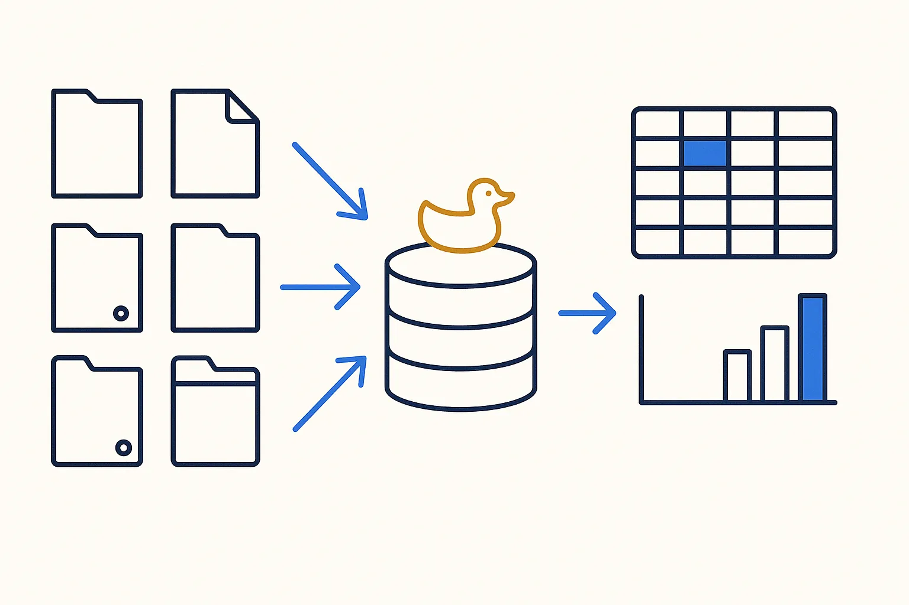
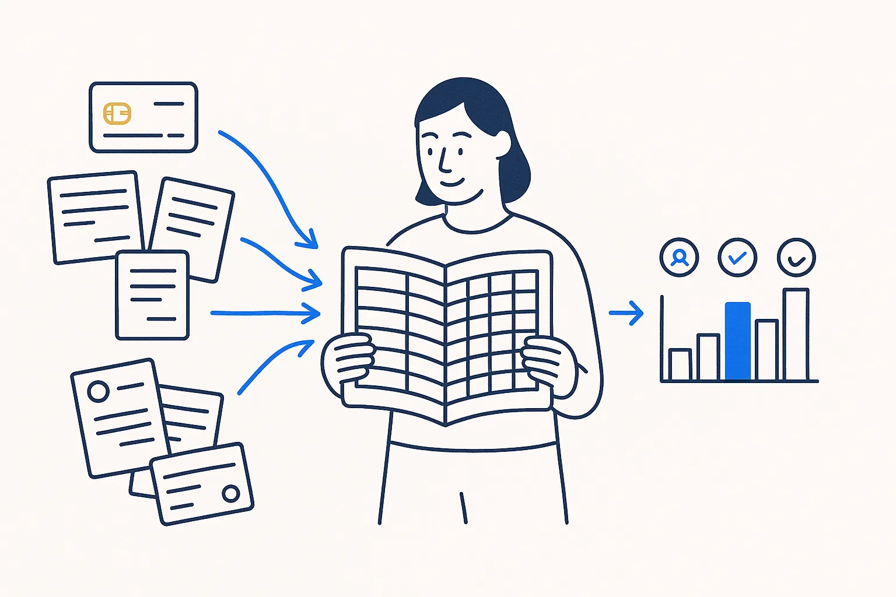
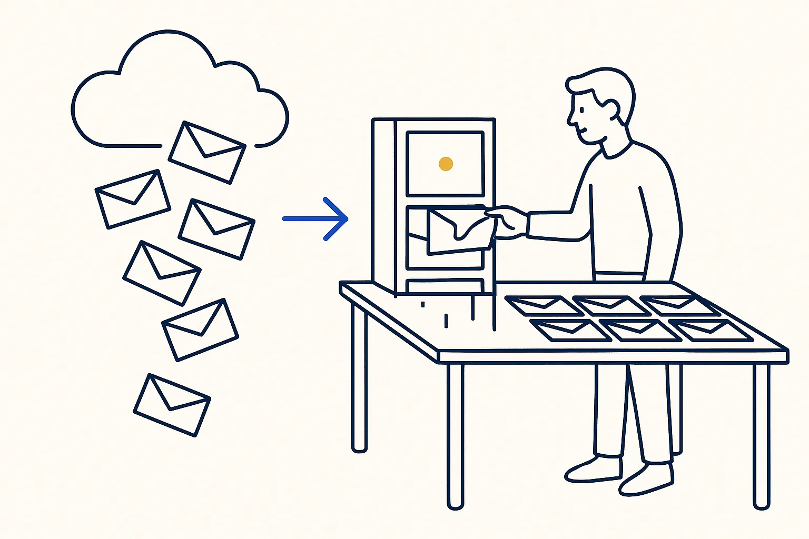
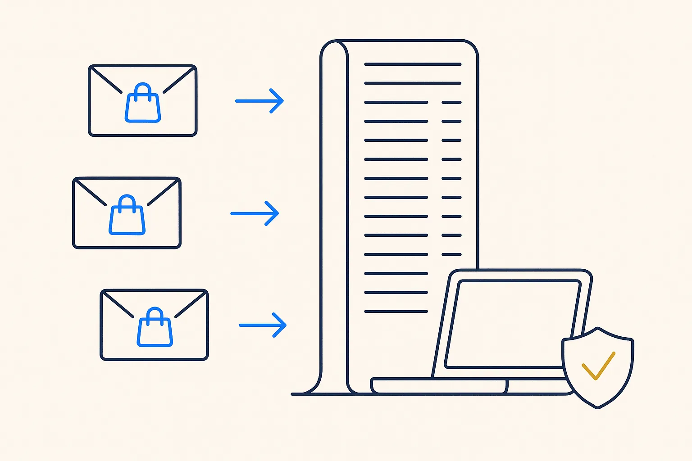
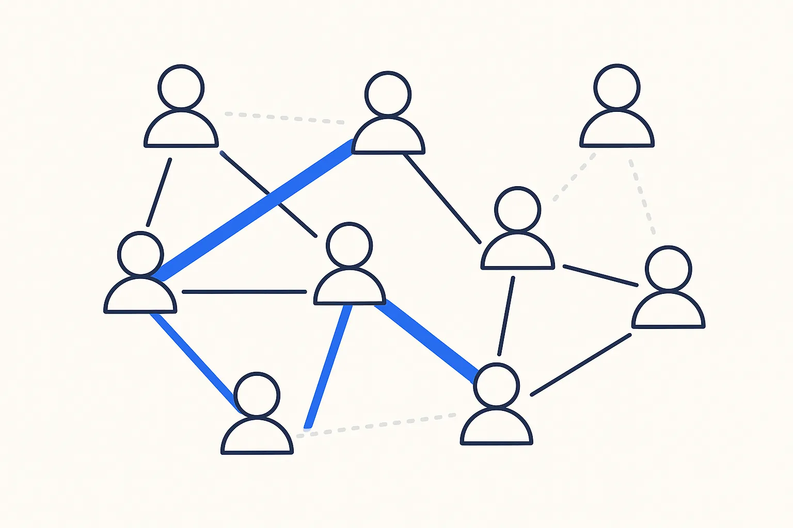
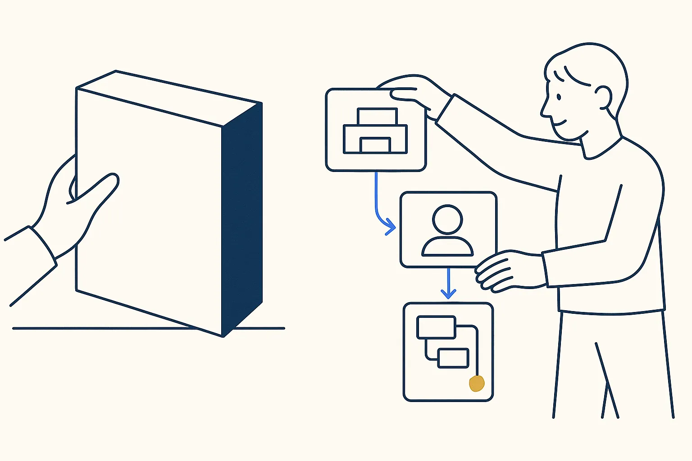
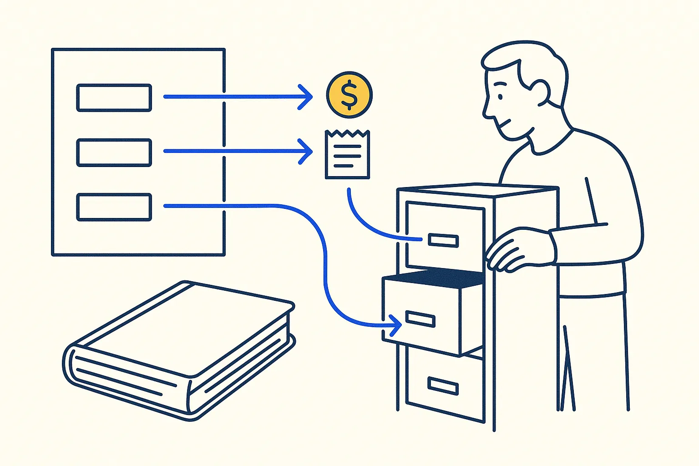
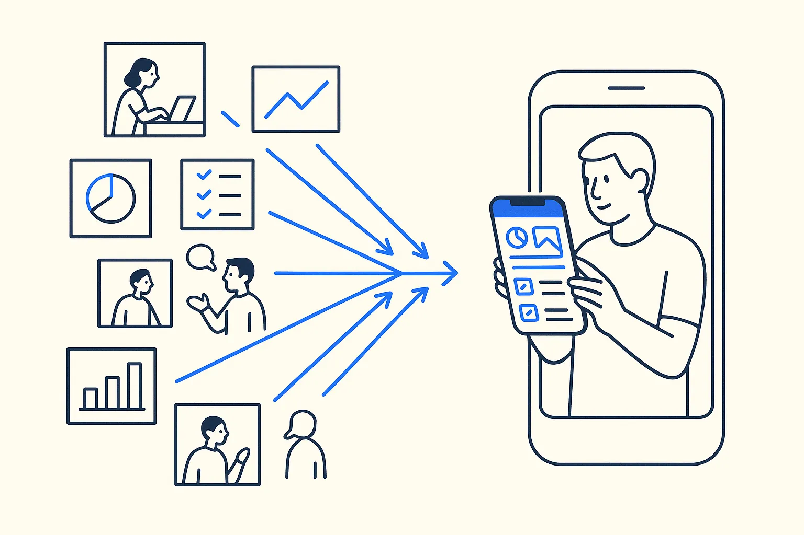

DuckDB
A database in a single file, no server. Ideal as a rebuildable mirror of files you own.
DuckDB Foundation

What it is
DuckDB is an analytical database that runs inside your program, with no server to install or maintain. A database is one file you can copy. It reads CSV, Excel, JSON and Parquet directly, and it speaks ordinary SQL.
How I use it
My rule is files first, database second. The truth lives in plain files I own: exports, notes, sidecars next to scans. DuckDB is a mirror of those files that I can delete and rebuild at any time, and the apps read the mirror. Because nothing is typed into the database by hand, nothing is lost when it is rebuilt.
My own cockpit runs on about 49 of these database files, one per domain: bookkeeping, mail, contacts, documents, photos.
On a Build Day
DuckDB is the easiest way to turn a spreadsheet or an export from your own software into something you can query and build on, on your laptop, without asking IT for a server.
Watch out
It is built for analysis, not for many people writing at the same time. For a shared app with many users, keep the files or a real server database as the source.
Links
Concepts behind it
- Deliberate Simplicity — Make each part as plain as it can be without losing what matters — reuse only the fraction you actually need, and strip the rest.
- Own the Layer or Rent the Feature — Every knowledge product answers two questions: who maintains it, and is it a layer of its own or a feature of something else. The answers decide what you can build on.
- Deterministic by Design — Deliberate is whether the structure was chosen; deterministic is whether the output repeats. A toy is neither on the second try.
- Rules You Can Verify — '2-space indent' is a rule; 'format code properly' is a wish. A rule the system can't check is decoration.
Used in these use cases

A household and business ledger you ownBank exports from several banks and a credit card land in one database, every row tagged personal or business and categorised by readable rules. The finance app becomes a view, not a vault.
Your mail archive as a database you ownMail is the biggest record a small company has of its customers, suppliers and agreements — and it lives in someone else's search box. A local, queryable copy turns it into data.
A purchase history from order confirmationsEvery web shop sends an order confirmation. Read them all into one table and you have a purchase history across every shop — warranty dates included.in progress
A relationship score from your own mail and messagesA CRM's most valuable feature — who you are losing touch with — rebuilt from data you already own, with the same published factors and your own weights.
Replacing a CRM before the renewal dateInstead of switching to another CRM, I model the work itself — people, organisations and recursive activities — and grow my own cockpit towards a fixed exit date.in progress
Keep the accounting package, own the booking rulesThe official books stay in the accounting package. The knowledge of how things are booked moves out of people's heads into a readable rule file, and a mirror of the books makes them queryable.
One cockpit instead of fifteen appsActions, ideas, incidents, finance, documents and photos — all as files with status fields, all readable in one app on the phone.Related articles
- Vibe Coding Without the Hangover
- Rules Before Models — Structure Beats Magic
- Your Database Is a View — Structure Beats Magic